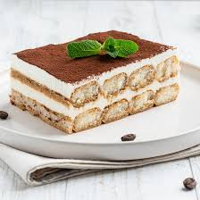

Tiramisu

Making the famous Italian dessert has never been easier!
Ingredients:
- 3 eggs
- 2 tbsp of sugar
- 500g of mascarpone
- Savoiardi
- Coffee (to sprinkle on top)
Steps
- Seperate the egg yolks from the egg whites.
- Add the sugar to the yolks and whisk.
- In a seperate bowl, whip up the egg whites.
- Incorporates the whipped up egg whites to the sugar yolks mix.
- Add the mascarpone to the mix.
- Mix gently until obtaining a smooth batter.
- In a plat, pour some water and add a tsp of coffee.
- Dip the Savoiardi in the water then dispose it in a baking mold.
- Repeat the process until layering the base.
- Add the batter on top of the Savoiardi layer.
- Repeat the process twice.
- Sprinkle the top with coffee
- Place the mold in the fridge and let it sit for 7 hours.
- Voilà!